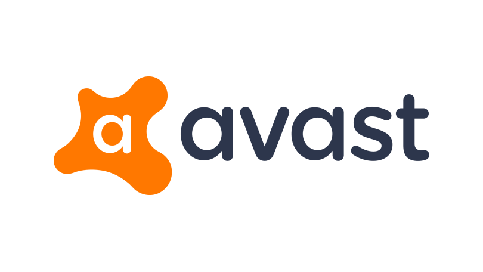
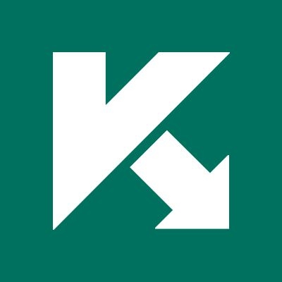
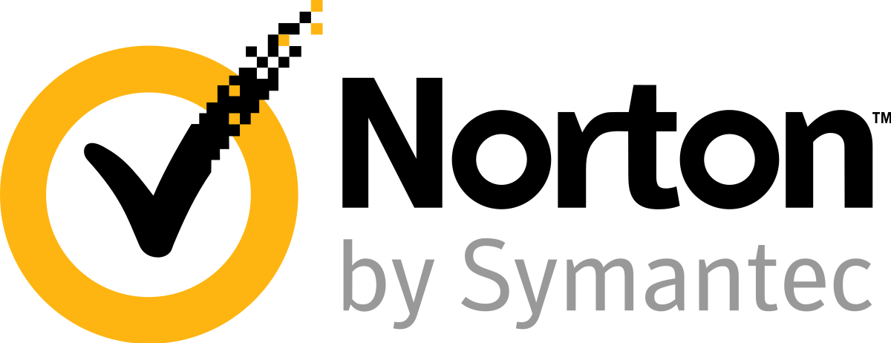
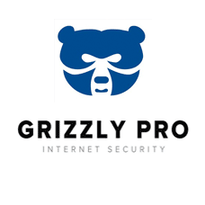
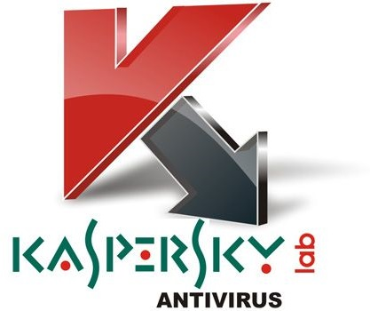
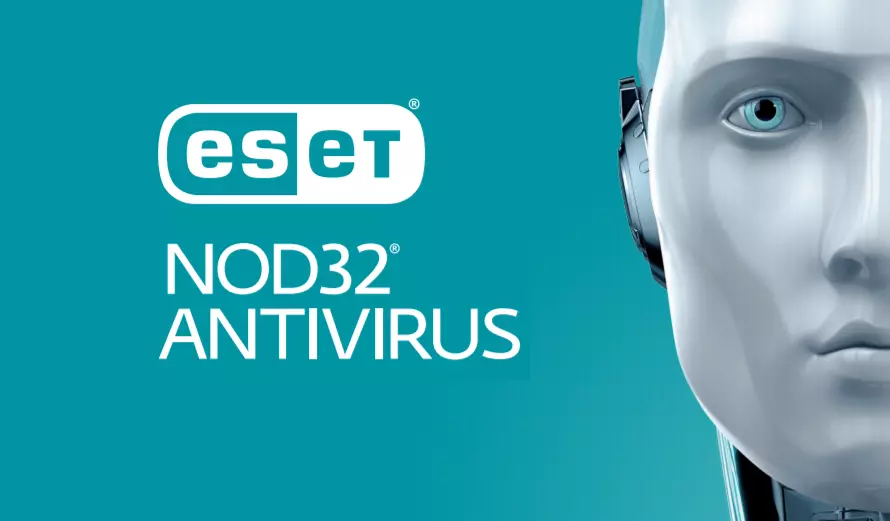

Защита компьютера от вирусов.
Лучшие антивирусы
Антивирусы это важная часть защиты компьютера. Но как выбрать антивирус для своего компьютера? В этой статье мы расскажем вам о лучших антивирусах для вашего компьютера.
В этой статье вы встретите как бесплатные так и платные решения.
Бесплатные антивирусы.
1. Avast Free Antivirus
Avast Free Antivirus это популярный бесплатный антивирус, специально разработанный для широкого использования на домашних компьютерах.

• Сайт: www.avast.com
• Стоимость: Бесплатно
• Системные требования: 1 ГБ жеского диска.
2. AVG AntiVirus Free
AVG AntiVirus Free — популярный антивирус, бесплатный для домашнего использования.

• Сайт: www.avg.com
• Стоимость: Бесплатно
• Системные требования: 1 ГБ жеского диска.
3. Kaspersky Free Anti-Virus
Антивирус Kaspersky Free — бесплатная антивирусная программа и софт для веб-защиты персонального компьютера в режиме реального времени на базе облачных технологий.

• Сайт: www.kaspersky.com
• Стоимость: Бесплатно
• Системные требования: 1 ГБ для жеского диска.
Платные антивирусы
1. Norton
Norton — антивирусная программа для удобного использования.

• Сайт: us.norton.com
• Стоимость: $34.99 в год.
• Системные требования: 1 ГБ для жеского диска.
2.Grizzly Pro
Grizzly Pro antivirus — антивирусная программа для удобного использования.

• Сайт: grizzly-pro.ru
• Стоимость: $18 в год, для 2 устройств.
• Системные требования: 1 ГБ для жеского диска.
3. Kaspersky Anti-Virus
Kaspersky — антивирусная программа для веб-защиты персонального компьютера в режиме реального времени на базе облачных технологий.

• Сайт: www.kaspersky.com
• Стоимость: Personal $89.99, Family $149.99.
• Системные требования: 1 ГБ для жеского диска.
4. AVG AntiVirus
AVG AntiVirus — популярный антивирус, для домашнего использования.
• Сайт: www.avg.com
• Стоимость: $39.99 в год.
• Системные требования: 1 ГБ для жеского диска.
5. NOD32 Antivirus
NOD32 Antivirus — антивирусная программа для удобного использования.

• Сайт: www.eset.com
• Стоимость: $39.99 в год.
• Системные требования: 1 ГБ для жеского диска.
На этом всё, желаем не подхватить вирусов.